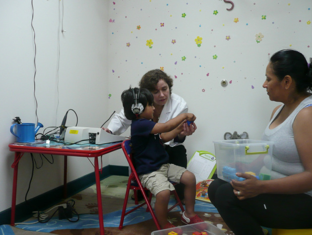

HEARING EVALUATION AND SERVICES
At the Audiology Center of NJ we provide outstanding diagnostic and treatment Audiological services to patients of all ages (from newborn to adult). Using state of the art equipment and techniques, including but not limited to:
Diagnostic Tests: Comprehensive Audiological Evaluation, Conditioned Play Audiometry, Visual Reinforcement Audiometry (VRA), Auditory Brainstem Response (ABR), Distortion Product Oto-Acoustic Emission (DPOAE), Immittance Testing including; Tympanometry; Acoustic Reflex test, Acoustic Reflex Decay; Toynbee; BPPV diagnostics; and Fistula Test.
Treatments: We select our hearing aids and assistive listening devices only from the best manufacturers who make and develop the most advanced technologies with a wide array of models to choose from, as we believe one size does not fit all; Tinnitus Management; Cerumen Management; BPPV Treatment; Custom earpieces, Audiology Expert Witness, and much more.
Comprehensive Audiological Evaluation
The Audiological evaluation is performed to assess the severity, configuration, and nature of the hearing loss, and whether the hearing loss is medically treatable/ or permanent. It consists of hearing threshold for pure tone sounds and speech testing and is performed in a sound-proof room. An audiological evaluation process is usually completed within 30 minutes, and the evaluation results with the management can be discussed following completion of the evaluation.
Conditioned Play Audiometry
Audiologic evaluation used with toddlers and preschoolers (ages 2–5).
Visual Reinforcement Audiometry (VRA)
Audiologic evaluation used with infants and young toddlers, aged 5 months to about 2.5 years of age.
Immittance Testing
Middle ear Analysis including Tympanometry, Acoustic Reflex Testing, Acoustic Reflex Decay, Fistula, and Toynbee/ Valsalva.
Distortion Product Oto-acoustic Emissions (DPOAE)
A non-invasive measure of cochlear (inner ear) function.
Auditory Brainstem Response (ABR)
A non-invasive measure of the activity of various parts of the auditory nerve pathway from the ear to the brainstem. Used for all ages (newborns to adults).
Hearing Aid Services
We offer the latest technology hearing aids from all leading brands including: Starkey, Oticon, Widex, Unitron, and Signia in every style and size to ensure that our patients achieve a better quality of life through improved hearing. We also offer unlimited office visits included throughout warranty period of the instrument.
Tinnitus Management
Tinnitus is the perception of unpleasant internal sound/s without an external source. Methods to treat / reduce the negative impact of the tinnitus sensation, using FDA approved state of the art technology with latest and highly successful management skills.
Cerumen Management
Ear wax removal.
Benign Paroxysmal Positional Vertigo (BPPV) Treatment
We provide the canalith repositioning procedure for BPPV: BPPV is a condition of the inner ear and is the most common of vestibular disorders. Each BPPV episode usually lasts between a few seconds to couple of minutes. With BPPV you often feel nauseated, but rarely vomit.
Benign: A disease without complications/with no serious underlying cause.
Paroxysmal: Sudden and recurring episodes of symptoms
Positional: The BPPV episodes are triggered by certain head positions.
Vertigo: A spinning sensation, floating, and unsteadiness.
Custom Earpieces
Used for cell phones and other digital devices, musician ear plugs musician monitors, noise protection/ hunting earplugs, swimming ear plugs, etc.
Expert Witness Services
Audiology Expert Witness.
HOW TO BECOME OUR PATIENT
Audiology Center of NJ is contracted to all major insurances. As a patient, you are responsible for making sure that your services are covered by your insurance company. We do accept patients that do not have insurance; payments can be made using credit cards, checks, or cash.
PPO
If you have PPO option with your insurance, you can call us directly to make your appointment; please make sure you have your insurance card ready when you call.
HMO
If you have an HMO option with your insurance, you will require a referral and/or authorization prior to coming to our center in order to make an appointment. More information is available below under the "Referrals" section.
Medicare
Patients who have Medicare insurance will require a referral from their primary physician.
Medicaid
Children and adults with Medicaid require referral in order to make an appointment.
Workers' Compensation
As a patient, it is important that you know of any limits to your benefits. For example, some insurances exclude certain diagnoses or restrict the number of visits you can have throughout one calendar year. You will ultimately be financially responsible if your insurance does not pay for the provided services you receive.
We also offer a courtesy low flat rate assigned for those who do not have insurance.
INSURANCES ACCEPTED
We accept all major insurances in addition to Maryland, Philadelphia, and New Jersey Workers' Compensation.
REFERRALS
Patients are referred by their physicians, speech language pathologists, audiologists, other professionals, early childhood intervention programs, and parents. Alternatively, your doctor may give you a prescription, which you may bring into our clinic at the time of your appointment. A patient also has the option to self-refer; however, we require physician order and insurance referral to avoid third-party reimbursement problems.